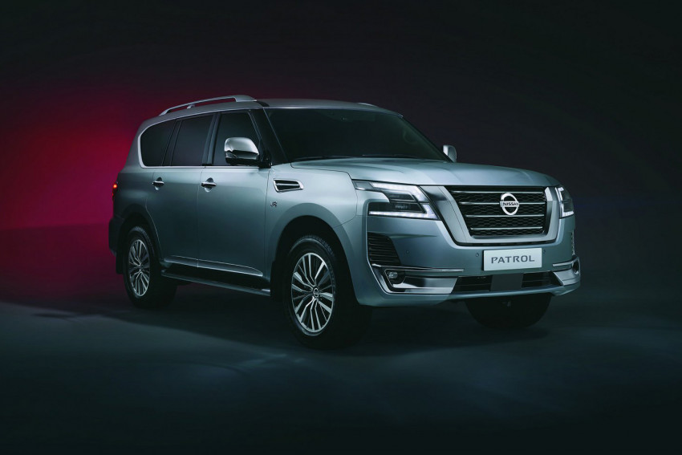
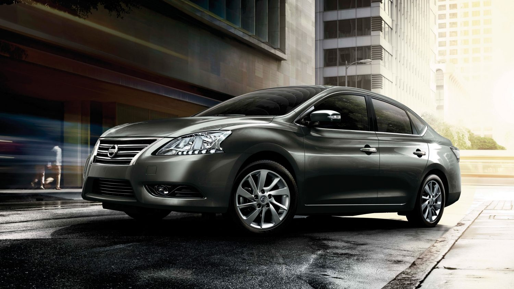

|  | تقدم نيسان باترول في مصر بمحرك ثماني الاسطوانات علي شكل حرف V سعة 5.6 لتر , الذي يولد قوة 400 حصان , و عزم اقصي للدوران يبلغ 560 نيوتن متر , و يتصل بصندوق سرعة اتوماتيكي من 7 سرعات , و ينقل القوة الي الطريق من خلال الدفع الكلي للعجلات |
|  | نيسان سنترا هي سيارة إعتمادية معروفة ومُنتشرة بشكل كبير في الشوارع المصرية. فهي الأخ الأكبر لسيارة نيسان صني، وتتميز سنترا بوسع الصالون والمساحات الواسعة فهي عائلية إعتمادية في المقام الأول. الجيل المتوفر حاليًا من السيارة في مصر هو الجيل السابع، فالسيارة لها تاريخ طويل في الخارج. وتم توفير النسخة المُحسنة من الجيل السابع كنسخة Premium بفئات بتسعير أعلى. والسيارة يتوفر منها حاليًا في الخارج الجيل الثامن والذي تم طرحه في عام 2019 ولم يأتي للسوق المصري. |
|
كشفت شركة نيسان موتور إيجيبت عن سيارة نيسان صني موديل 2021 في السوق المصري بأربع فئات مختلفة التجهيزات، تبدأ بنسخة ذات ناقل حركة يدوي من 5 سرعات يصل سعرها إلى 191,900 جنيهًا مصريًا وتنتهي عند الفئة الرابعة super salon بسعر 237,500 جنيهًا مصريًا، إليك أسعار ومواصفات السيارة في السوق المصري. |